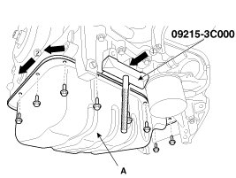
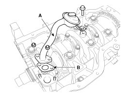
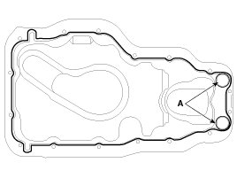
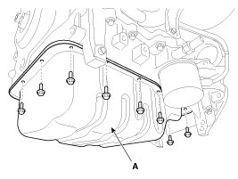

Oil Pan: Service and Repair
Removal
1. Remove the under covers.
2. Drain engine oil.
3. Remove the oil pan (A).
(1) Unfasten the bolts.
(2) Insert the blade of SST (09215-3C000) between the lower crankcase and the oil pan. Separate the applied sealer and remove the oil pan.

NOTE:
Loosen one oil pan bolt near each corner of the oil pan leaving the bolts held in by about 2 threads. Then remove all other pan bolts.
NOTE:
- Insert the SST between the oil pan and the lower crankcase by tapping it with a plastic hammer in the direction of 1 arrow.
- After tapping the SST with a plastic hammer along the direction of 2 arrow around more than 2/3 edge of the oil pan, remove it from the lower crankcase.
- Do not turn over the SST abruptly without tapping. It is result in damage of the SST.
- Be careful not to damage the contact surfaces of the lower crankcase and the oil pan.
4. Remove the oil screen (A) with the gasket (B).

Installation
1. Install the oil screen (A) with a new gasket (B).
Tightening torque
Bolt :
19.6 - 26.5 N.m (2.0 - 2.7 kgf.m, 14.5 - 19.5 lb-ft)
Nuts :
11.8 - 13.7 N.m (1.2 - 1.4 kgf.m, 8.7 - 10.1 lb-ft)
2. Install the oil pan.
(1) Using a gasket scraper, remove all the old packing material from the gasket surfaces.
(2) The sealant locations on the oil pan and the lower crankcase must be free of harmful foreign materials, oil, dust and moisture.
Spraying cleaner on the surface and wiping with a clean duster.
(3) After applying liquid sealant on the oil pan, assemble it within 5 minutes after sealant was applied. Continuous bead of sealant should be applied to prevent any path of oil leakage.
Bead width
Whole section :4.0 - 5.0 mm (0.16 - 0.20 in.)
Section A : 1.5 - 2.5 mm (0.06 - 0.10 in.)
Sealant:Threebond 1217H

CAUTION:
- When applying sealant gasket, sealant must not be protruded into the inside of oil pan.
- To prevent leakage of oil, apply sealant gasket on the inner threads of the bolt holes.
- If the sealant is applied to the bottom surface of the lower crankcase, it should be the same position as the oil pan.
(4) Install the oil pan (A). Uniformly tighten the bolts in several passes.
Tightening torque:
9.8 - 11.8 N.m (1.0 - 1.2 kgf.m, 7.2 - 8.7 lb-ft)

CAUTION:
After assembly, wait at least 30 minutes before filling the engine with oil.
CAUTION:
Always use a new drain plug gasket.
3. Refill engine with engine oil.